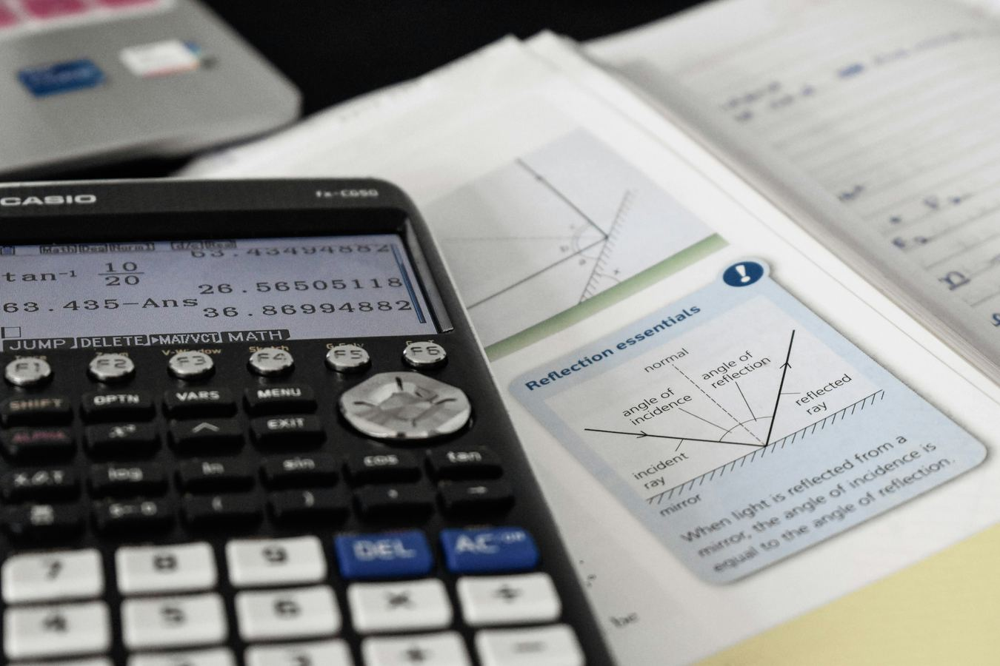
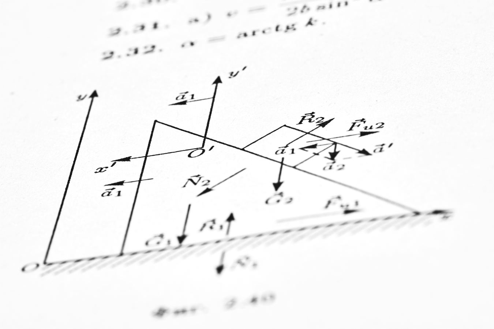
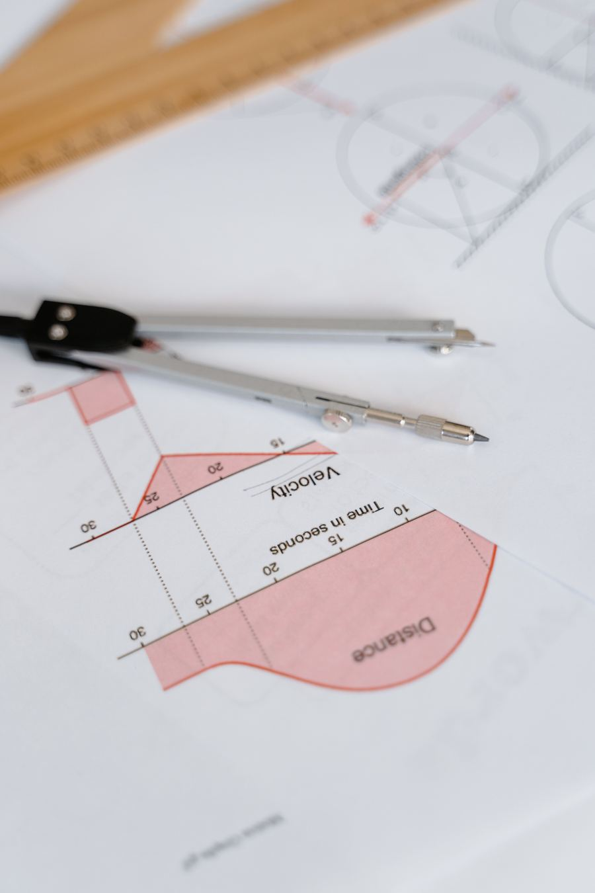

STEM Education & Advanced Mathematics
Mastering the Geometry of Modern Engineering
Advanced STEM instruction led by an automotive engineer and HBCU alum. From SAT preparation to multivariable calculus, Nile Numeratics bridges classroom theory and real engineering precision.
One-to-one sessions · Algebra I through university engineering mathematics
-
NASA Research
-
U.S. Space Force Research
-
MBA Candidate
-
NASA Research
-
U.S. Space Force Research
-
MBA Candidate
Our Curriculum
Every Track, From First Principles to Engineering
Built for the Question Types That Actually Appear
Every SAT and ACT mathematics section is assembled from a finite set of question archetypes. We work through each one until the recognition is automatic, then rehearse it under real time pressure.
- Heart of Algebra
- Problem Solving & Data Analysis
- Passport to Advanced Math
- Geometry & Trigonometry
- Timing & Section Strategy
- Full-Length Diagnostics
The Foundation Every Later Course Rests On
Most difficulty in calculus traces back to an unfinished idea in algebra. This track closes those gaps first, so the harder material has something solid to stand on.
- Linear Equations & Inequalities
- Quadratics & Factoring
- Functions & Transformations
- Coordinate Geometry
- Proof & Logical Reasoning
- Systems of Equations

The Bridge Into Calculus
Precalculus is where students first meet the language calculus is written in. We build fluency with the unit circle and the core function families until both are second nature.
- Unit Circle Fluency
- Trigonometric Identities
- Exponentials & Logarithms
- Polynomial & Rational Functions
- Vectors & Polar Coordinates
- Sequences & Series

From the First Derivative to Multivariable
The full sequence, taught the way it is actually used in engineering — the mechanics of differentiation and integration alongside the reason each theorem exists at all.
- Limits & Continuity
- Differentiation Techniques
- Applications of the Derivative
- Integration & the FTC
- Partial Derivatives
- Vector Calculus
Where the Mathematics Meets the Machine
The coursework an engineering degree is built on, taught by someone who has applied it professionally — from free-body diagrams to the differential equations behind real systems.
- Kinematics & Newtonian Mechanics
- Statics & Free-Body Diagrams
- Work, Energy & Momentum
- Differential Equations
- Linear Algebra for Engineers
- Engineering Problem Framing

Our Process
How We Turn Effort Into Understanding
-
Diagnostic Session
We open with a full diagnostic to find where the gaps actually are — not where the syllabus assumes they are. No cost, no obligation.
-
Custom Study Plan
You get a written plan mapping every topic to a session and the date it needs to be mastered by. You approve it before any work begins.
-
One-to-One Sessions
Weekly instruction built around that plan. Each concept is worked from first principles, then drilled until the method holds under pressure.
-
Progress Review
We re-test against the original diagnostic every few weeks and share the results, so improvement is measured rather than assumed.
-
Write to us
-
Availability
Now booking sessions
-
Every session
One-to-one, never in groups
Send Us a Message
Feel Free to Write
Tell us where the student is now and where they need to get to. Every enquiry is answered personally.